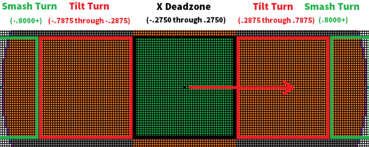
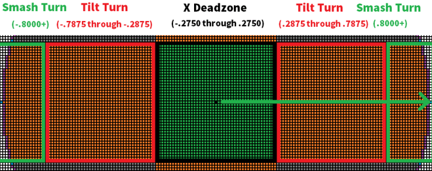
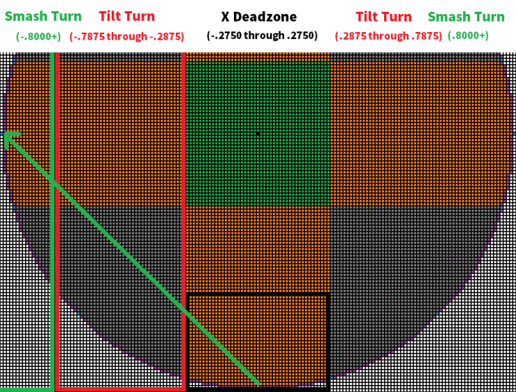
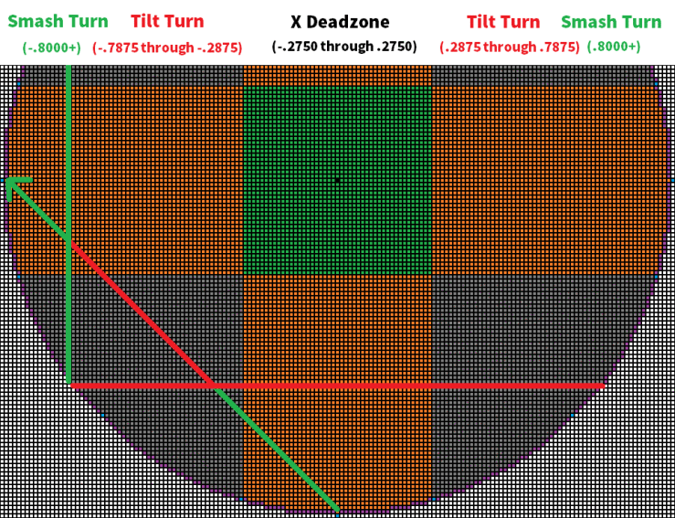
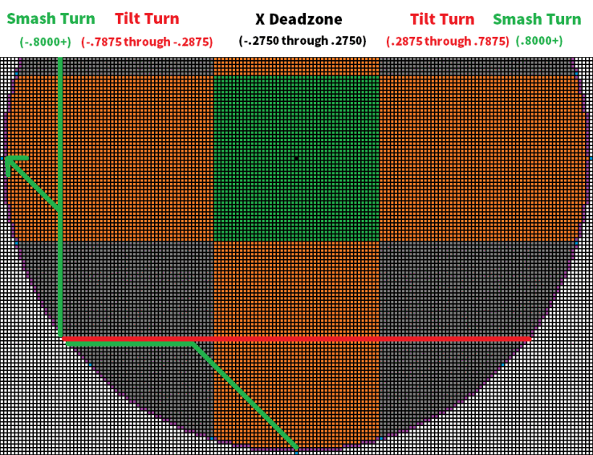

Modding the Nintendo Gamecube Controller in C++ and Leveling the playing field
In the competitive scene for Super Smash Bros. Melee not every controller performs equally. Certain controllers perform better than others and the stock for these controllers is rapidly declining and demand is increasing as the game is becoming more popular. This poses a problem where players need to dish out hundreds of dollars for a controller that will input correctly for them. What this mod tries to do is balance the playing field allowing a standard of controllers that everyone can compete equally on.
For a normal Gamecube controller dash back is highly luck-dependent due to bad design of the game. To input dash back, you have to skip from the X Deadzone to Smash Turn in 1 frame(The game runs in 60 frames per second so 1/60th of a second to input the dash back). This is the biggest oversight the game developers never fixed and introduces a luck factor on every controller called "polling".The problem is that if the game is reading your inputs 60 times a second if at any point the controller reads you in Tilt Turn, your dash back will fail. In order to Smash Turn, you must cross the over a zone called Tilt Turn. This is a major factor when it comes to why some controllers are valued more than others. The controllers that dash back more successfully than others are at the advantage.
We account for polling by making it so that if you start from the Deadzone, the Tilt Turn inputs are not read until the 2nd frame of actuation. This guarantees that the dash back will succeed every time at the cost of a frame. We also make it so that if A,B,L,R,X,Y, or Z buttons are inputted on the same frame as the Tilt Turn input, it goes through with a Tilt Turn input as normal (The code assumes you are not attempting a dash back when you press any of the buttons).
Similar to the Dash Back problem, Dash Back Out of Crouch also has a "polling" effect. The first condition to input Dash Back Out of Crouch is to reach smash turn in 2 frames within leaving the Deadzone.
The second condition states that during the process, you must not reach the y axis at -.6125 or more before you reach Smash Turn. Failing the second condition causes your character to simply stand up from crouch.
We keep the second condition intact but add another 1-frame buffer during the Tilt Turn. On top this we also have the controller buttons shut these buffers off similar to the fixes for Dash Back.
Shield dropping is a technique in melee that allows a player to drop off a platform while shielding. This technique is very powerful as it takes a player from a defensive position to an offensive position. However certain controllers have notch values that make shield dropping easier than other controllers. This widens the gap of tiers of controllers. Before this mod, players notched their controllers manually. Manually notched meaning someone physically alters the notches on their controller to give them a shield drop notch. Problem was that this job is not only pricey but the long queue times and the limited qualified people to do the job makes it hard for any normal person to get their controller notched.
In the character select screen the player can point at their controller at the south west notch and press 'L'. Then point at the south-east notch and press 'R'. The sound effects will notify you that you have "notched" your controller. With this calibration, any controller with any type of notches can shield drop effectively.
Due to manufacturing disparities, many Gamecube controllers struggle to hit the maximum 1.0000 cardinal value. On average, most controllers are only able to reach around .9875 within the desired axis. By adding perfect cardinality there is around a 1% increase to analog inputs such as run speeds and aerial drifts.
At the character select screen, all the aforementioned mods can be toggled off/on by holding D-Pad Down for 1 second. An audio cue will confirm. This will also reset shield drop notches.